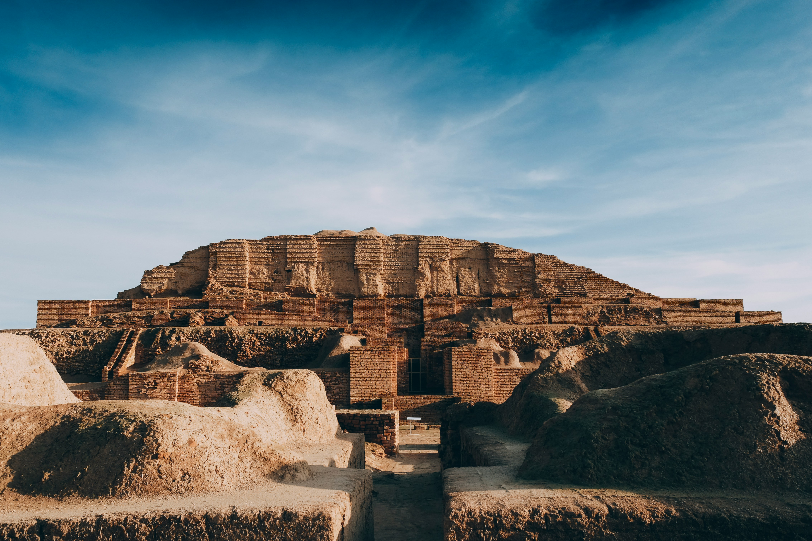

Exercices multimédia et liens
Galerie d'images

Ressources externes
Voir une jolie fleur
Voir externe.html
Aller à la navigation
Aller à la page d'accueil
Aller à la page des formulaires
Aller à la page des listes
Aller à la page multimédia